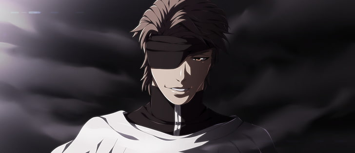

Anime Bleach
Sinopse
Ichigo Kurosaki é um adolescente comum com uma habilidade extraordinária: ele pode ver e se comunicar com espíritos. Sua vida tranquila muda drasticamente quando ele encontra Rukia Kuchiki, uma Shinigami (Deusa da Morte) que é responsável por guiar almas perdidas e combater os Hollows, espíritos malignos que ameaçam o equilíbrio entre o mundo dos vivos e o mundo espiritual.
Durante uma batalha contra um Hollow, Rukia é gravemente ferida e, para salvar sua vida, transferiu seus poderes para Ichigo. Agora, Ichigo é forçado a assumir o papel de Shinigami substituto, enfrentando desafios e perigos que vão além de sua imaginação. Ao lado de seus amigos, ele deve proteger o mundo dos vivos e das almas perdidas, enquanto desvendam os mistérios do mundo espiritual e enfrentam inimigos poderosos.
Com uma mistura de ação intensa, drama e elementos sobrenaturais, "Bleach" mergulha os espectadores em uma jornada épica de crescimento pessoal e batalhas emocionantes, explorando temas de dever, amizade e destino.

TOP 10 personagens para mim
-
Sosuke Aizen

Zaraki Kenpachi
Kisuke Urahara
Ichibē Hyōsube
Kirinji Tenjiro
Senjumaru Shutara
Shunsui Kyōraku
Oetsu Nimaiya
Ichigo Kurosaki
Retsu Unohana
10 Melhores episódios
Episódio 110 - "Kenpachi vs. Nnoitra"
Episódio 117 - "The Power of the Soul Reapers"
Episódio 125 - "The Lust of the Goddess"
Episódio 148 - "The Existence They Barely Know"
Episódio 151 - "The Soul Reapers of the Soul Society"
Episódio 167 - "The Greatest Enemy"
Episódio 213 - "The Awakening of the Quincy"
Episódio 215 - "The Power of the Soul Reapers"
Episódio 244 - "The Last Quincy's Fight"
Episódio 274 - "The Final Showdown"